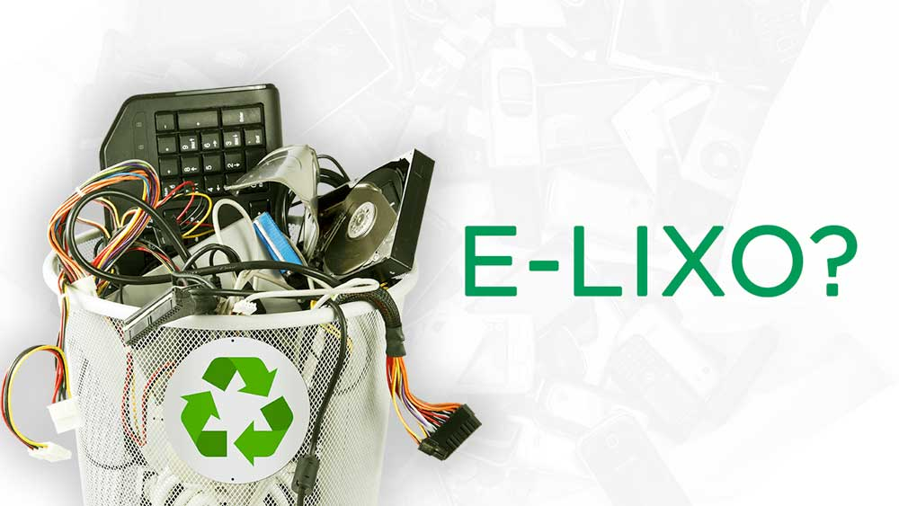
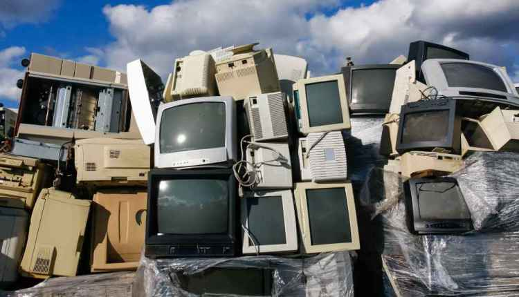

Google Drive
E-lixo

Todo eletrônico antigo ou que já não é mais utilizado pode ser considerado um e-lixo. Com os diversos avanços tecnológicos, as empresas e indústrias
Quando paramos de utilizar algum produto e substituímos por um novo, automaticamente chamamos de resíduo eletrônico ou e-lixo. Consideramos qualquer

O Brasil produz cerca de 1,5 milhões de toneladas de e-lixo por ano, estimando que cada brasileiro produza cerca de 7 a 10kg de e-lixo por ano.
Reino Unido;
Alemanha;
Índia;
Japão;
Estados Unidos;
China;
Brasil.
Pelo os eletrônicos serem compostos por substâncias altamente tóxicas ao meio ambiente como o bário, o chumbo e vários outros metais
Abaixo, contém um vídeo explicando o que fazer com esse lixo.
VIDEO
Vantagens que o Google Drive trouxe para a Natureza
Os problemas ambientais têm tomado uma devida importância para os dias de hoje, com os próprios consumidores escolhendo bem a empresa
Diminui o Uso de Energia Elétrica
O grande problema que principalmente as empresas tinham era com a necessidade de muitas vezes criarem sistemas para armazenamento de
Menos Uso de Equipamentos
É substituição de materiais físicos por algo virtual. Um exemplo básico era quando usávamos bastante CDs para gravar vídeos e acumulando
Diminuição no Uso de Papéis
Estima-se que um funcionário em um escritório pode gastar cerca de 10.000 papéis ao ano, e nem precisamos se aprofundar muito nesse
Baixe o Google Drive